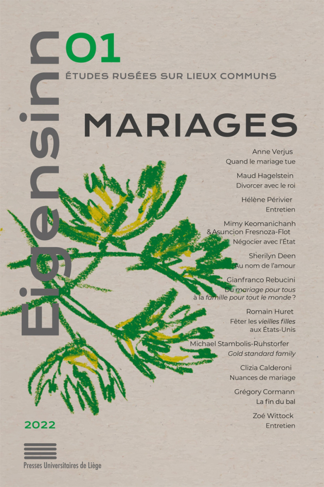

Welcome to my website
I am a researcher in economics in the OFCE at Sciences Po Paris. My research focuses on evaluation of family, social and tax policies, and on the analysis of gender inequalities in the labour market, in the family and in higher education. I am also interested in the history of economic thought with a feminist perspective.
I am the director of the gender studies porgram of Sciences Po, PRESAGE. Since April 2023, I am the president of the High Family Council in the Haut Conseil de la famille de l’enfance et de l’âge, HCFEA. This Council aims at fostering and leading public debate on family issues and public policies in the French context.
New!
“De Sciences Po à l’ENA, la voie étroite vers les sommets de la fonction publique” , Working Paper OFCE n° 15/2022, Maxime Parodi, Hélène Périvier and Fabrice Larat, 2022
-> listen to the podcast Genre etc. dedicated to this research (in French only)
Interview in the first issue of Eigensinn -> « Il faut trouver une nouvelle articulation entre le marché, la famille et l’État social », entretien autour de L’Économie féministe (2020)

My latest book, now translated into brazilian !